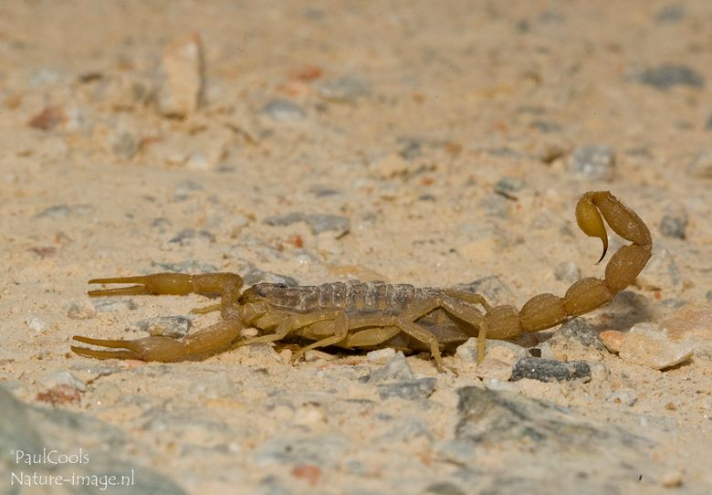
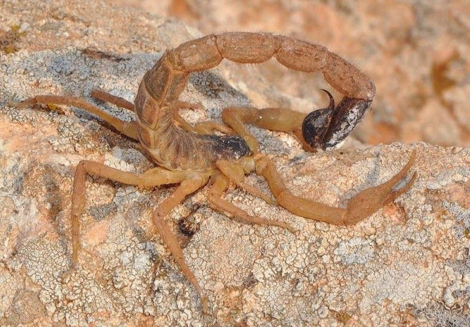
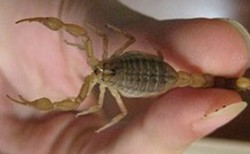
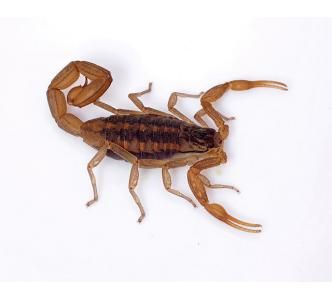

Schorpioenen op Kos
Schorpioenen komen vooral voor in drogere, steenachtige gebieden en heuvels. Ze zijn relatief klein (meestal < 10 cm) en bruin of geelachtig van kleur.
Op Kos: klein, schuw en zelden een probleem.

Schorpioenen komen vooral voor in drogere, steenachtige gebieden en heuvels. Ze zijn relatief klein (meestal < 10 cm) en bruin of geelachtig van kleur.

Overdag verstoppen ze zich onder stenen of in donkere hoekjes. ’s Nachts jagen ze op spinnen, insecten en krekels. Hun gifstekel gebruiken ze vooral ter verdediging.

De steek is pijnlijk (vergelijkbaar met een sterke wespensteek), maar voor gezonde volwassenen vrijwel nooit gevaarlijk. Kinderen, ouderen en mensen met een allergie kunnen een sterkere reactie krijgen.

On Kos: small, shy and rarely a problem.
Scorpions are mainly found in drier, rocky areas and hills. They are relatively small (usually under 10 cm) and brown or yellowish in colour.
During the day they hide under stones or in dark corners. At night they hunt spiders, insects and crickets. Their stinger is mainly used for defence.
The sting is painful (similar to a strong wasp sting) but almost never dangerous for healthy adults. Children, older people and those with allergies may react more strongly.
Auf Kos: klein, scheu und selten ein Problem.
Vor allem in trockenen, steinigen Gebieten. Relativ klein (meist unter 10 cm), braun oder gelblich.
Tagsüber verstecken sie sich unter Steinen. Nachts jagen sie Spinnen und Insekten. Der Giftstachel dient vor allem der Verteidigung.
Schmerzhaft (wie ein starker Wespenstich), für gesunde Erwachsene fast nie gefährlich.
A Kos: piccoli, timidi e raramente un problema.
Soprattutto in zone asciutte e rocciose. Relativamente piccoli (di solito sotto i 10 cm).
Kos’ta: küçük, ürkek ve nadiren sorun.
Daha çok kuru, taşlık bölgelerde. Genellikle 10 cm’den küçük.
En Kos: pequeños, tímidos y rara vez un problema.
Sobre todo en zonas secas y rocosas. Relativamente pequeños (normalmente menos de 10 cm).